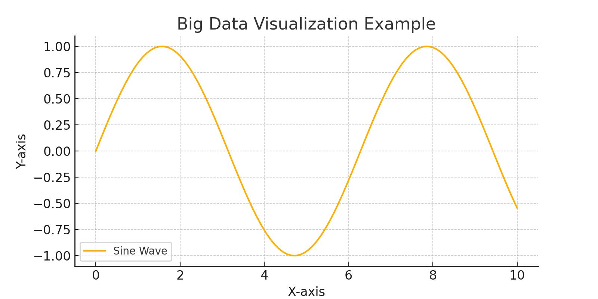

June 10, 2024
Big data technologies are transforming the way we handle and analyze large datasets. In this post, we'll explore some of the most popular big data tools and how they can be used to gain valuable insights from massive amounts of data.
Here is an example of a Python code snippet that demonstrates how to use the Pandas library to load and analyze a dataset:
import pandas as pd
# Load the dataset
data = pd.read_csv('data.csv')
# Display the first 5 rows of the dataset
print(data.head())
# Basic statistics of the dataset
print(data.describe())